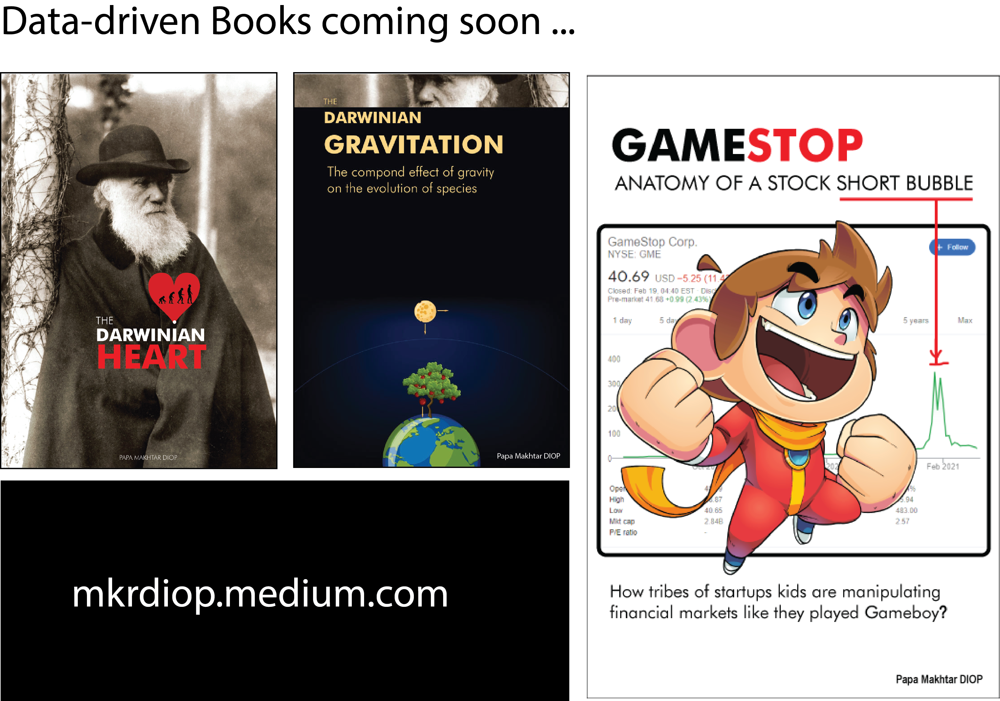
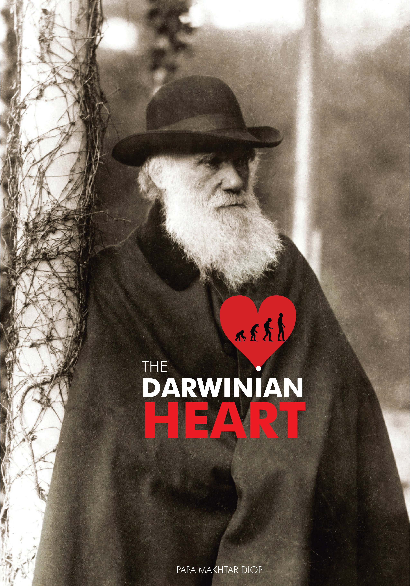
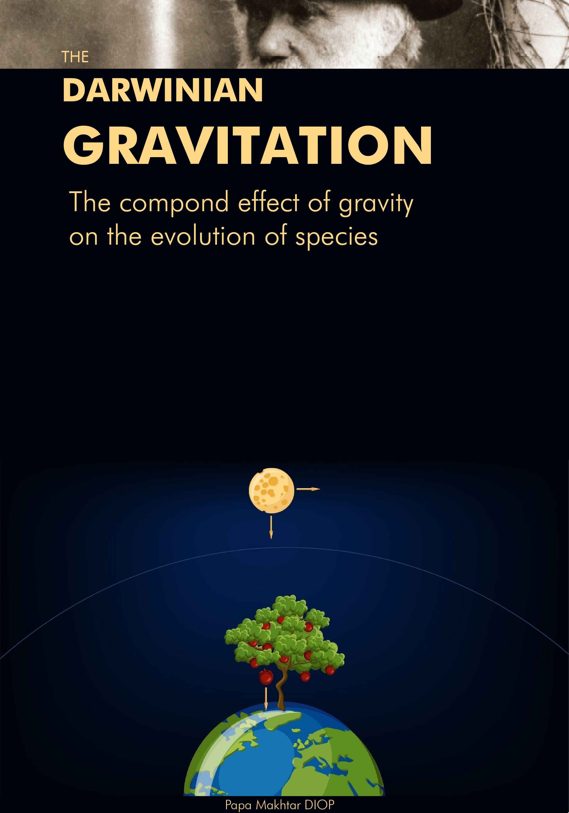

Data-driven Books
Because Books are so undervalued while they are still more and more important


Data-driven marketing, data-driven product, data-driven startup, and now data-driven books.
Yes books about the key insights that data brings us. Now that we have collected so much data about us, our behavior, and our environment, it is time to sit and look at them and understand what they are saying to us. What leap forward could we get from them. Yes, data that we produced using all these social networks since the globe.com, socialnet, Facebook, and Twitter. Computational social science has now data to show how important this field is and it helps to care about cognitive science and psychology because it is about the social behavior of human beings. But if you are interested in wild nature, you also have all these data gathered by professional anthropologists, naturalists, biologists, and could just say, scientists. While you are hustling to get the next clicks or the next sales, all these data are there accessible for you to work on it and to help us understand better ourselves and our world instead of interrupting us. The availability of data is an entire chapter of my book Gamestop, anatomy of a stock bubble because the availability of financial data fueled a bit this event. Of course, it is not an easy job to see a theory and to try to prove it, and is more true if like me you are an unfunded independent scientist working alone. But the output is worth the challenge and it is not crazy to think that at some point in time an institution that cares about the world could follow and support. Working with data and monitoring network effect had financial and business goals but they highlighted scientific work that needs to be done because this world needs it more than another copy product or service which is successful because it is well market engineered by a student of the market.
Book because I believe that it is still the only kind of project, company, or idea that can be turned into success without a team but it is never bad to have support from others. So thank reading because by doing this you are also supporting me and my work.
computational social and financial science matter most.
PS: please Hope and wish me that I will publish these data-driven books because the Darwinian Heart and the Darwinian gravitation are two topics so big for a humble and simple man like me.

